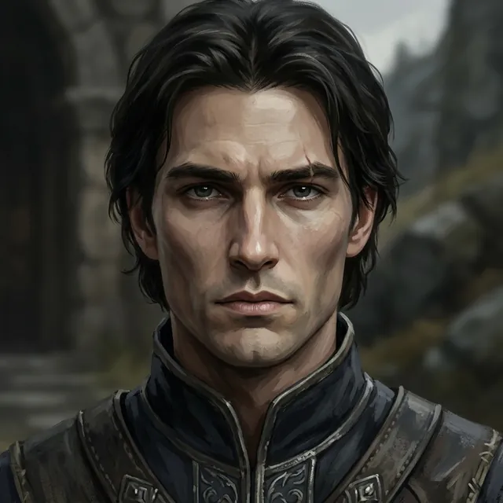

Ser Aldric Vane
Of the Second Lance
Only what the story has shown so far.
Appearance
Thirty-four, beautiful in a severe way and disciplined to the bone: a pale, clean-shaven face, black hair worn loose to the collar, level dark-grey eyes that give nothing away, and a thin old scar above one brow. He dresses with care, in a high-collared dark tunic trimmed in silver under tooled leather. Of the two boys who once held other men's horses together, he is the one with the better seat, the better manners and the better luck with the kind of women whose fathers mattered. He never raises his voice and spends few words; at Harrow Ford he sat his horse at Darrow's left hand, close enough to touch, and left the one word that mattered unsaid.
Now
Last seen Prologue · I — Harrow Ford
Offstage since Harrow Ford, where Darrow last saw him on the west bank as the river closed over him. Seven weeks after the Binding, with six grey cloaks and a censer on the Holloway, Darrow believes that the hand that wrote his name first on their list was that of the man who has ridden knee to knee with him since they were boys; the page has only Wren's silence and her look to say who was first.
Story so far
He and Darrow were squires together and were knighted the same morning; at Harrow Ford he held the Second Lance in reserve on the west bank and told Darrow to ride wide, and when the Grace went out of the Ninth midriver Darrow saw his horse already turned and climbing out. In the week of the Grey Cot a letter in his hand came up the Steps under blue wax, given to the carter by the grey cloak at the winch-house: it called Darrow brother, remembered the mare he walked backward over the bridge at Calden, and bade him come home and kneel and be whole. Darrow burned it.
Quote
Ride wide today.
Relationships
- Ser Darrow of Edgemoorknighted the same morning
They were squires together holding other men's horses and were knighted the same morning in the same cold chapel, kneeling shoulder to shoulder with their palms on the Oathstone; at the ford he sat at Darrow's left hand and told him to ride wide, and the last thing Darrow saw before the river took him was Aldric's horse on the west bank, already turned.
The Reckoning
⟦ unread ⟧
Known facts
What the page has shown (9)
- He has the Second Lance, which the writ from command held in reserve while the Sixth and the Ninth were sent to clear the ford, and he sat his horse at Darrow's left hand, close enough to touch, on the west bank of Harrow Ford.Prologue · I — Harrow Ford
- He and Darrow rode knee to knee from the time they were squires holding other men's horses, and were knighted on the same morning in the same cold chapel, kneeling shoulder to shoulder with their palms on the Oathstone while it warmed under their hands.Prologue · I — Harrow Ford
- Darrow still has his face from the morning they were knighted, when the Grace went into him the first time: a man hearing music he had only ever been told about.Prologue · I — Harrow Ford
- By Darrow's account he has the better seat, the better manners and the better luck with the kind of women whose fathers mattered.Prologue · I — Harrow Ford
- Before the crossing he watched the far bank without smiling and told Darrow to ride wide, then wider; his mouth was open on some other word when the chaplain's bell began down the line, and he shut it and looked away.Prologue · I — Harrow Ford
- As Darrow went under, he saw Aldric's horse on the west bank already turned and already climbing back up out of the shallows, Aldric bent low over its neck, one heartbeat early by Darrow's count; when the red-handed woman turned Darrow's head to the river, the Second Lance sat its horses on the west bank in perfect order, untouched, watching.Prologue · I — Harrow Ford
- On the night Maelis offered Darrow the two ways off the mountain, he weighed going down to kneel again, and saw Aldric's horse on the west bank, already turning, before he asked whether he could kneel after.Prologue · III — The Binding
- With Darrow's name first on the list the Confessors read out at the inn in Coldmere, Darrow believes it was written in a warm room in Calden by a man who has ridden knee to knee with him since they were boys, and hears again the words "Ride wide today."Chapter 1 · Scene 1 — The Reading of the Knots
- He wrote to Darrow at the House of Menders, signed A., remembering Thistle and the bridge at Calden: Come home, brother. Kneel, and be whole.Chapter 2 · Scene 5 — Come Home, Brother